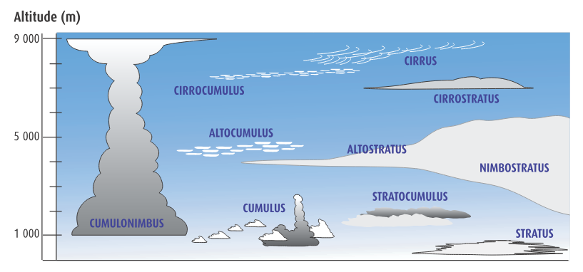

☀️
🔣
Test des Symboles
Entraînez-vous à reconnaître les symboles aéronautiques
🏠 Accueil
🎯 Quiz
📊 Stats
📖 Révision
📅 Historique
🔍 Recherche
🔣 Symboles
⚙️
Configuration
🎯 Quiz
📖 Consulter
☁️ Nuages interactif
Mode :
🔣 Symbole → Signification
📝 Signification → Symbole
Catégories :
Tout sélectionner
Tout désélectionner
Questions :
🚀 Commencer le test
Filtrer par groupe :
Placez le bon type de nuage à chaque emplacement sur le diagramme d'altitude.

✅ Vérifier
🔄 Réinitialiser